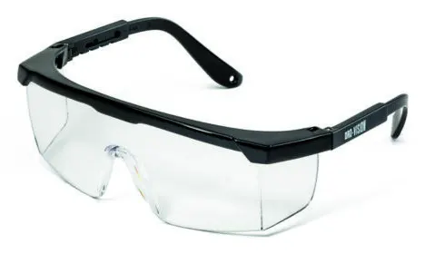
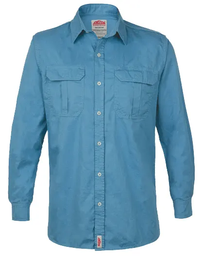
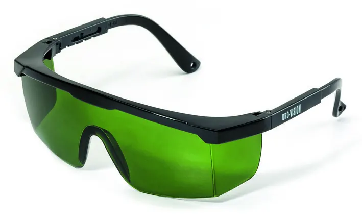
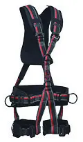
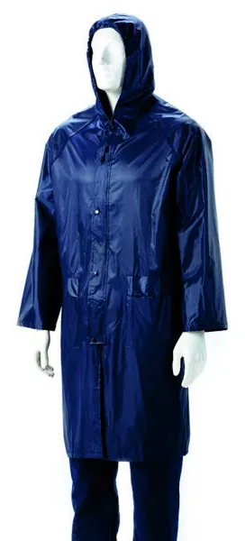
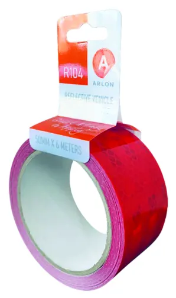
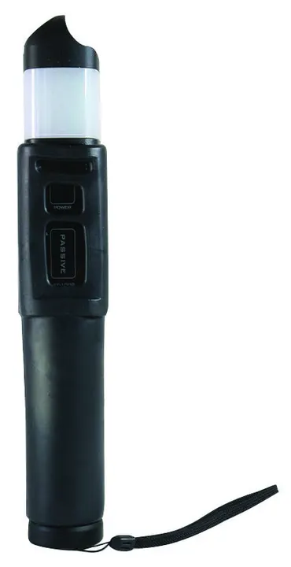

Loja de EPI e segurança
590 produtos em 14 categorias. Monte a sua lista e peça cotação em poucos cliques.
Explorar por categoria

Protecção ocular49 produtos Protecção auditiva27 produtosVestuário repelente a insectos17 produtos
Protecção auditiva27 produtosVestuário repelente a insectos17 produtos Vestuário de alta visibilidade39 produtos
Vestuário de alta visibilidade39 produtos
Vestuário de protecção101 produtos
Protecção geral44 produtos
Segurança de alturas53 produtos
Vestuário impermeável12 produtos Luvas de protecção81 produtos
Luvas de protecção81 produtos Protecção respiratória50 produtos
Protecção respiratória50 produtos Calçado de segurança52 produtos
Calçado de segurança52 produtos Controle de derrame8 produtos
Controle de derrame8 produtos
Sinalização42 produtos
Bafómetros e segurança15 produtosTodos os produtos


Óculos de Protecção Virtua Ap
3M-O-VIRT-G


Óculos de Protecção Secure Fit
3M SF401 · 3M SF402 3M SF403 +1

Óculos Sport
DEF 200C · DEF 200G


Óculos de Protecção Pheos CX2
U-9198265

Óculos de Protecção Pheos CX2
U-9198237

Óculos de Protecção Pheos
U-9192225
Óculos de Protecção Pheos
U-9192245

Óculos de Protecção Pheos
U-9192370
Óculos de Protecção Pheos
U-9192285
Óculos de Protecção Pheos CX2 Fumado
U-9198064
Óculos de Protecção I-Works Cinza
U-9194885

Óculos de Protecção X-Fit
U-9199265

Óculos de Protecção X-Fit
U-9199280

Óculos de Protecção Sportstyle
U-9193280

Óculos de Protecção I-Vo
U-9160265
Óculos de Protecção I-Vo
U-9160076


Óculos de Protecção Skyguard Nt
U-9175260


Óculos de Protecção Overspecs
U-9161005
Óculos de Protecção Pheos Guard
U-9192180


Óculos de Protecção U-Sonic Goggles
U-9308240
Óculos de Protecção U-Sonic Goggles
U-9308247


Abafador
H9A

Abafador Acoplável
H9P3E
Abafador
H10B


Abafador
Abafador Acoplável

Abafador


Dispensador de Tampões


Camisa de Manga Comprida
IC-ZS7

Camisa de Manga Comprida Pro
IS-SUN3


Camisa de Alta Visibilidade e Dois Tons
IC-ZS10-HV

Fato Macaco de Alta Visibilidade
IC-KC4-HV


Meias de Malha
IS-HCS1

Aba Protectora para Capacete
IS-HSS1


Colete Reflector EN4 - Airtex
RWT-LIM-AIR

Colete Reflector EN4 - Poly
RWT-LIM-POL
Colete Reflector EN4 - Airtex
RWT-ORG-AIR

Colete Reflector EN4 - Poly
RWT-ORG-POL
Colete Reflector EN4 - Poly
EN4-POL


Capacete de Cobertura e de Sombra
HIVIZ-BRIM

Chapéu Cricket de Alta Visibilidade
HIVIZ-CRKHAT

Boné Beisebol de Alta Visibilidade
CP1L / CP10


Vestuário para Oficiais de Segurança
9120 · 9100 +1


Acessórios para Oficiais de Segurança
9134 · 9155 +5
Botas de Segurança
SFT007-PA · SFT007-RE +2


Camisa de Mangas Compridas de Dois Tons
DE-HVLS-RN · DE-HVLS-GN


65/35 Fatos Alta Visibilidade Bicolor
4641PC-NO – Azul Marinho / Laranja · 4641PC-NL – Azul Marinho / Verde Lima


Rb Or Rd Kh
P-FR21-RB · P-FR21-ORG +2


Bata Clássica
3390 · 3390 +1
Coletes Multi-Bolsos
DEF-JKF-STN · DEF-JKF-NVY +1
Chapéus de Safari
DEF-BH-STN · DEF-BH-NVY +1

Touca Descartável
MOPCAP
Capas Protetoras
SHOE-C-B

Avental PVC
APN-B+F · APN-100-W


Casaco de Crute sem Gola
WELD/JKT

Máscara de Soldar
WS · 1300


Barbaqueixo para Capacete 2 e 3 Pontos
SAFCS2C (2 pontos) · SAFCS3C (3 pontos)


Viseira
FS1381C-C-B

Capacete com Viseira Aro de Aluminio
FS-ALI · FS-1MM


Kit de Primeros Socorros para Viaturas
FIR-AID-VEH-140 · FIR-AID-VEH-310


Boia Salva Vidas
LA70090

Colete Salva Vidas 100N
40-50kg


Colete Salva-Vidas 100N
LA709913-100N

Colete Salva-Vidas 150N
LA709933-150N
Colete de Trabalho 50N
LA71144


Luvas de Nitrilo
G-10FLEX


Luvas de Nitrilo
U-6605

Luvas de Nitrilo
U-60027 · ATHLETIC +1


Luvas de Látex
G-MGH1-10


Luvas de Couro
HP6114


Luvas Anti-Corte
U-6659 · 4X43C


Luvas Anti-Corte
59YSP


Filtros Unifit Dhct


Fitas de Alta Visibilidade Luminosas
VC-150-RED Vermelho · VC-150-YEL Amarelo +1

Fitas de Alta Visibilidade Luminosas - 7M
VC-150-7-RED Vermelho · VC-150-7-YEL Amarelo +1

Cones Rodoviárias PVC
R-CON450-ORG • Cones de segurança rodoviária fabricados em PVC · R-CON710-ORG (policloreto de vinilo) de elevada resistência +2

Barra Cônica Telescópica
DH-TCB-1

Topos de Cone
DH-TOP-RW-9 · DH-TOP-BY-9

Corrente Plástica para Sinalização
DH-PC-6-R/W · DH-PC-8-R/W +1
Poste de Base de Plástico para Corrente
DH-GC-1-POST · DH-GC-BASE +1

Cavalete de Sinalização
WET/FLR

Bandeira de Chicote
B/WHIP-3M

Cerca de Segurança de Plástico
ORG/MESH/50
Stop / Go
DH-SSP-40

Bandeira Reflectora com Poste PVC
FLAG-REF-G · FLAG-REF-R
Espelhos Convexos
MIR-600 · MIR-1000
Fita de Segurança
B/TAPE-RW-500 · B/TAPE-YB-500
Fita Antiderrapante
DH-AST-YB/50

Barricadas de Expansão
EXP/BARR


Barreira com Água Empilhavel
DW-SWB-2
Barreiras 2M Vedação de Plástico
DH-PFB4-Y

Sinalizador de Viatura Strobe
MAG-ACOT-STR

Sinalizador de Tráfico
WAND-ORG
Lombas EPDM
DH-215M MIDDLE SECTION (seção do · DH-215E END PIECES (peças das +2


Batente de Roda para Estacionamento
DH-IPB-6 · DH-PB-5 +1

Fechos de Segurança Brady
MS422-RED (51339) -Vermelho · MS422-GRN (51345) +5
Fechos de Bloqueio Brady
MS421-38MM (805841)

Caixa de Fecho Level
MS498-A (065699)


Estação de Cadeados
800121
Impressora Térmica
BMP21

Impressora Térmica
BBP31 · BBP33

Impressora Térmica
BMP41-EU
Impressora Térmica
BMP71-QWERTY


Bafómetro Alcovisor Mercury
CA050060 (Bafómetro) · CA050040 (Impressora)

Impressora Magicard Neo 300 Duo
AA050020
Impressora Magicard 100 Neo
AA050050


Sinais Simbólicos — Série FB — Combate a incêndios
FB 1 · FB 2 +11
Sinais Simbólicos — Série GA — Informação e emergência
GA 1 · GA 2 +24

Sinais Simbólicos — Série MV — Obrigação
MV 1 · MV 2 +18
Sinais Simbólicos — Série PV — Proibição
PV 1 · PV 2 +29

Sinais Simbólicos — Série WW — Aviso
WW 1 · WW 2 +30


Não encontrámos produtos com estes critérios. Tente outra pesquisa ou fale com a nossa equipa.